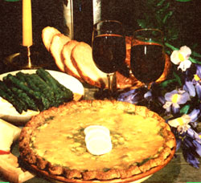
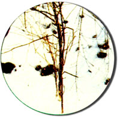
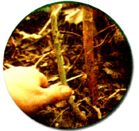

Wild food enthusiast Jhon E.Traister came home empty-handed time and time again, until the forager finally he was being...
Ol' Euell Gibbons "stalked" all the asparagus he could eat, and some of my best friends seem to gather the tasty vegetable by the cord. Unfortu nately, neither Gibbons' inspiration nor my buddies' encouragement seemed to help me. I searched for the elusive 'gras spears for many a spring, but-no matter how far I roamed or how doggedly I scoured the ground-my gatherin' sack always remained empty.
Then one May morning-as I was mowing the far corner of a too-long-neglected lawn-I started to get a very peculiar feeling. Call it a wild food lover's sixth sense, deja vu, or just a gnat buzzing in my ear ... whatever the unusual sensation was, it kept coming back to me every time I went past that one bend. Well, when I get an itch I scratch it ... so on the next circuit I stopped my grass cutter and took a look.
Right away, some dead plant stalks caught my eye. The dried "sticks" stood out from the rest of last year's weeds because they were light-almost tan-in color, and because each one consisted of a single, half-inch "trunk" with a few scrawny branches dangling from its sides. The three-foot-tall stems looked like pitiful excuses for needleless, discarded Christmas trees. But, clustered at the base of these "Yuletide rejects" were bunches of firm, young asparagus shoots! At last I'd found the evasive little vegetables ... and right in my own back yard,too!
Now, I've told you about my plant-finding experience to show that [1] there may be lots of asparagus growing right under your nose, and [2] you can find your own supply of tasty spears ... I you know what to look for! Or, rather, if you learn how not to search for these foraged delicacies.
Don't, for example, hunt-with your eyes glued to the ground-for the "l'il sprouts" themselves: Those purplishgreen babies may be dwarfed by other plant growth or hiding under old leaves. Instead, learn to recognize the tall, dried stalks (which are all that remains of last year's mature plants). You'll find plenty of 6- to 10-inch goodies nestled under these easily observed " signal f lags' ".
To be successful, you'll have to know exactly what those stalks look like. Andalthough the photos and descriptions in this article can help-the best way to sharpen your asparagus- spotters is to actually see some plants "in the flesh". So if you know a friendly forager, get him or her to take you out for a lookin' lesson.
On the other hand, maybe a neighbor of yours has grown a patch of 'gras in his or her vegetable garden for the past few seasons. If so, last year's shriveled-up asparagus leftovers are probably still standing around the plot. Go sit yourself down in front of those dead stalks for a few minutes and memorize their features. Don't fret that you may be examining some tame variety that won't look at all like the "woolly" breed you're out to capture ... because wild and cultivated asparagus are one and the same plant (Asparagus officinalis, literally "shoot used as medicine"). Seed-spreading birds once helped some garden specimens "escape from civilization", and now the hardy perennial ranges all over the country.
If-after all your stalk studies-you still come up empty-plattered this spring, the asparagus plants you missed will grow past the shoot-eating stage and mature into tall stalks. But don't stop looking! Any "grown-ups" you find in July will give you succulent sprouts ... when you come back to the "marked" spot the following spring.
The summer plants have the same tapering- toward- the-top, feathery branch design as dead spring stems do, but still. growing stalks are green in color, and their sparse sprigs are flecked with tiny hairlike leaves (the wispy fronds are often used for decoration in table bouquets). Pollinating plants also develop small, drooping, greenish-white flowers that each yield-by fall-a single, bright red berry (which harbors the seeds that the birds spread).
Of course, chances are-with the kind of "training" that I've described-you'll End yourself up to your ankles in good eatin' this spring. Because, once you've learned to identify asparagus plants, you'll be amazed at how easy the young shoots are to find! Field borders, the sides of old railroad tracks, or any open areas with good soil and sun are likely to contain thriving "plots" that you can return to again and again (just pick all the young spears, and their persistent roots will send up new ones)!
In fact, nowadays I just position my two children by the car's rear windows, drive down littletraveled country lanes, and let the young'uns shout out the roadside patches as we roll along. No sir, I no longer worry about having to "stalk" asparagus . . . 'cause these plants are so plentiful that it seems like they're stalking me!
Want to learn more about finding and cooking wild foods? Here are some good books on the subject:
Stalking the Wild Asparagus by Euell Gibbons (David McKay, 1970). Paperback. $3.95. Billy Joe Tatum's Wild Foods Cookbook & Field Guide edited by Helen Witty (Workman, 1976). Large paperback. $4.95. Feasting Free on Wild Edibles by, Bradford Angier (Stackpole, 1972). Pa perback. $5.95. American Indian Food and Lore by Carolyn Niethammer (Collier, 1974). Large paperback. $4.95. Edible Wild Plants by Oliver Perry' Medsger (Collier, 1972). Paperback. $3.95.
The above volumes are available from many good bookstores or-at list price plus 950 shipping and handling ($2.00 if., you order three or more books)-from, Mother's Bookshelf, P.O. Box 70, Hendersonville, North Carolina 28739.
When you've finally herded up a pail of fresh little asparagus shoots (you can help tenderize any tough, woody, older stalks by peeling them), it's time to pull on an apron and set in to cooking, Of course, the easiest way to fix your vegetables is to just "bile up and butter" (or better yet, steam to the right consistency) a plateful, but the scrumptious spikes will easily lend themselves to all sorts of other good-eating treatments, too!
If you'd like to serve a juicy asparagus hors d'oeuvre, for instance, simply wrap each cooked spear with a piece of buttered sandwich bread and hold the appetizers together with toothpicks.
Or, how about a dish of asparagus "popcorn"? To start this eye-opener, slice your raw stalks on the extreme bias, about a quarter-inch thick. Then heat 1 tablespoon of olive oil and a bit of ginger (like asparagus, ginger can be found "free for the foraging") in a skillet. Throw in 3 cups of the lean vegetable pieces, Wong with a couple dashes of salt and pepper Turn the heat up to -high", put a lid on the pan . . . and start shaking! In about four minutes, this old popcorn-cooking technique will give you-and yours-some mighty crisp eating!
The "free-food" gourmet's delight, however, just about has to be Bily Joe's Asparagus Pie (reprinted here-with the permission of Workman Publishing Company, New York-from Billy Joe Tatum's Wild Foods Cookbook & Field Guide, copy right © 1976 by Billy Joe Tatum). To make this delicacy, you'll first have to bake-and set aside-your own favorite pie shell recipe. Then-to make a white sauce-melt 3 tablespoons of butter, blend in 3 tablespoons of flour, and add 1 cup of hot milk (stir the mixture continuously for 5 to 10 minutes until it thickens). When this "gravy" is ready, mix in a couple of chicken-or vegetable- bouillon cubes (these are optional), 1 tablespoon of minced chives, and salt and pepper to taste.
Next, add 4 cups of cooked, 1-inch asparagus pieces and 4 chopped, hardboiled eggs. Pour this finished filling into your baked pie shell and sprinkle the top with 1/2 cup of shredded cheddar cheese. Finally, slide this beautiful master work into a 400°F oven for 10 minutes (or until the cheese begins to brown), and then (what are you waiting for?) dig in!
|
|
 |
 |
|
 |
|
|